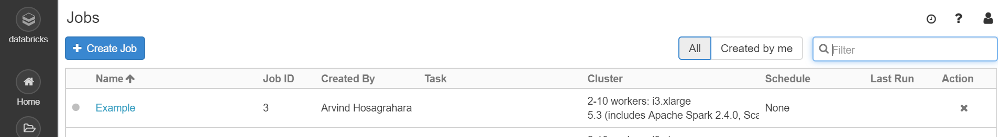

Jobs API
A job allows users to create automation clusters based on a specified cluster configuration. This allows creation and submission of jobs that will either use an existing cluster or create a new Spark™ cluster for the execution of the job.
Create a job
A job can be created using the create method. If a cluster profile is specified, the job will create the Spark cluster based on the configuration.
For example:
% Cluster object based configuration
cl = databricks.Cluster;
cl.setNumWorkers([2 10]);
% Note: do not specify cluster name
Furthermore, a job without a task (or a list of tasks), has no purpose, as it will not do anything. As an example, create a notebook task.
NT = databricks.NotebookTask();
nbPath = '/Shared/UnitTests/Simulink_3DOFs';
baseParams = struct('massLow', '1200', 'massHigh', '1400');
NT.notebook_path = nbPath;
NT.base_parameters = baseParams;
To create a new job using the cluster definition, minimally:
jb = databricks.Job;
jb.name = 'Example';
jb.setCluster(cl);
jb.setTask(NT);
jb.create();
This will result in a job being created on the Databricks® platform.
The job has still not run. It can be started through other methods on the databricks.Job object,
or by starting it from the Databricks web interface.

List Jobs
A list of all jobs can be queried using:
jobs = databricks.Job.list();
This will return a list of Jobs on Databricks as an array of Databricks jobs.
>> jobs(1)
ans =
Job with properties:
name: 'TestJob31-Jul-2019 13:16:16'
timeout_seconds: 3600
max_retries: 1
created_time: 1.5646e+12
job_id: 8
new_cluster: [1×1 struct]
email_notifications: [1×1 struct]
max_concurrent_runs: 1
creator_user_name: 'user@example.com'
Setup of Job-based event notifications
Databricks can be configured to send out email notifications on Job based events. To configure a job
to respond to these events by sending emails, users can use the databricks.JobEmailNotifications object.
For example:
notify = databricks.JobEmailNotifications;
notify.on_start = 'user@example.com';
notify.on_success = 'user@example.com';
notify.on_failure = 'user@example.com';
An additional property no_alert_for_skipped_runs exists. If true, there will be no email sent to recipients specified in on_failure if the run is skipped.
This object can be attached to a job using the setJobEmailNotifications method.
jb.setJobEmailNotifications(notify);
To set all of the notification conditions more concisely call:
job.setJobEmailNotifications('user@example.com');
Or if a notification address is configured in databricks-settings.json, simply:
job.setJobEmailNotifications();
Connect to an existing job
A job on the databricks system is identified by a job_id. It is possible to connect to an existing job using its job_id.
jb = databricks.Job;
jb.setJobId(87);
jb.refresh();
jb =
Job with properties:
name: 'Untitled'
timeout_seconds: 0
max_retries: 1.00
job_id: 101.00
max_concurrent_runs: 1.00
creator_user_name: 'user@example.com'
created_time: 1566439248663.00
email_notifications: [1×1 struct]
new_cluster: [1×1 struct]
Run a job
To run a configured job:
jb.runNow();
Schedule a job
A job can be scheduled to run at a given time(s) using a Cron Schedule:
% Sample job and cluster objects
cl = databricks.Cluster;
jb = databricks.Job;
jb.name = 'Example';
jb.setCluster(cl);
% Create a CronSchedule object
cs = databricks.CronSchedule;
% Configure its Quartz Cron Expression
% see: http://www.quartz-scheduler.org/documentation/quartz-2.3.0/tutorials/crontrigger.html
cs.setQuartzCronExpression("0 15 22 * * ?");
% Optionally set its execution to PAUSED or UNPAUSED
cs.setPauseStatus("UNPAUSED");
% Set the timezone for the schedule
cs.setTimezoneId("Ireland/Dublin");
% Apply the schedule to the job
jb.setSchedule(cs);
% Configure a task
task = databricks.MATLABBatchTask("disp(datetime)");
job.setTask(task);
jb.create();
Run a job as a user or service principal
The setRunAs method specifies the user or service principal that the job runs as.
If not specified, the job runs as the user who created the job.
Only user_name or service_principal_name can be specified as the type.
Type user_name should specify the email of an active workspace user.
Non-admin users can only set this field to their own email.
Type service_principal_name should specify Application ID of an active
service principal. Setting this field requires the servicePrincipal/user
role.
j = databricks.Job;
j.runAs("user_name", "joe@example.com");
j = databricks.Job;
j.runAs("service_principal_name", "123bc6d0-ffa3-11ed-be56-1234ac123456");